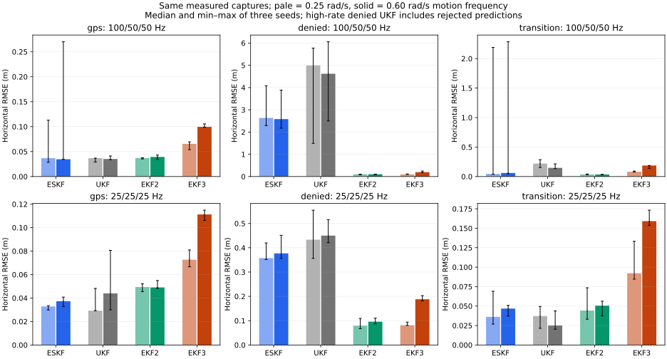
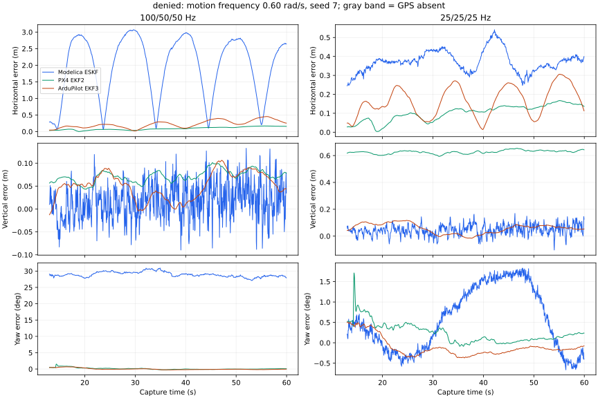
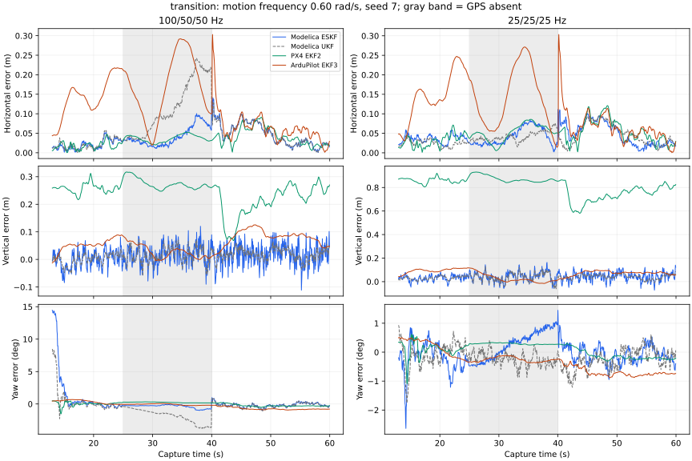

7 October 2026 · 144 native/generated-code replays · two trajectories · three noise seeds · two aiding-rate profiles · independent analytic truth.
Finding: native PX4 EKF2 has the lowest velocity error and usually the lowest GPS-denied horizontal error in these controlled captures. The Modelica ESKF and UKF are competitive with GPS and sometimes have lower horizontal error. Both Modelica filters' single-correction priority chains starve magnetic yaw updates at 100 Hz optical flow. At 25 Hz aiding, magnetic fusion resumes and GPS-denied performance improves substantially. Altitude performance depends on the profile; PX4 has larger vertical errors at the lower rates. These are as-configured stack results, not a universal algorithm ranking.
For the faster trajectory, medians at 100/50/50 Hz: GPS-denied horizontal RMSE is approximately 0.10 m for EKF2, 0.20 m for EKF3, 2.58 m for ESKF and 4.62 m for UKF. The high-rate denied UKF rejects some predictions, making its error a runtime/configuration failure metric. At 25/25/25 Hz the corresponding errors are approximately 0.10 m, 0.19 m, 0.38 m and 0.45 m, with uninterrupted prediction. PX4 altitude RMSE worsens at the lower rates (about 0.63–0.82 m); there is no single best stack across all axes.
| Stack | Executable implementation | Configuration and interpretation |
|---|---|---|
| Modelica ESKF | Vehicles.Rdd2.NavigationEstimator, generated C99 by released Rumoca 0.10.2 | Actual 800 Hz FOH preintegration and analytic bias Jacobians, 100 Hz filter; RDD2 process noise/initial variances. Pseudo-position and zero-velocity corrections disabled to avoid a trajectory-dependent motion oracle. |
| Modelica UKF | Estimation.StrapdownINS.UKF.Estimator, same compiler/preintegrator | Declared UKF initial variances; RDD2 process noise. An explicit per-sigma intermediate avoids a released compiler reduction bug. Prediction is continuous for GPS, transition and lower-rate denied runs. High-rate denied runs still reject some predictions; all finite outputs remain scored, and prediction acceptance is reported separately. |
| PX4 EKF2 | Unmodified native EKF source at f1c0a1f794ed | GPS, flow, range, magnetometer and barometer enabled; barometer height reference, conditional range aid, declared magnetic declination. Other native noise defaults retained. |
| ArduPilot EKF3 | Unmodified Tools/Replay / AP_NavEKF3 at 1511f27194f1 (Copter 4.7.0) | One IMU/mag/barometer; GPS position/velocity, flow fallback/parallel velocity, compass yaw, barometer height. Other native noise defaults retained. Relative position validity is accepted during GPS denial. |
PX4's public guidance describes its delayed fusion horizon and optical flow requirements; PX4 navigation filter documentation. ArduPilot documents configurable source sets and optical-flow operation; source selection and flow setup. The measured results below come from the pinned implementations and harness configuration, not these moving guides.
Trace figures display every fifth output sample (approximately 20 Hz); all metrics use every output sample.
Recorded wall times include capture I/O, DataFlash conversion, startup and logging; they do not compare filter CPU cost. This study measures neither worst-case execution time nor flight-computer resource budgets.



Every cell is median [minimum, maximum] across seeds 7, 19, 41. There are only three seeds: these ranges are not confidence intervals. GPS and denied summaries use 13–60 s; transition summaries below use the 25–40 s outage. Full-flight, pre-outage and post-return results for every run are in the linked JSON and CSV.
| Scenario | Estimator | Horizontal RMSE (m) | Vertical RMSE (m) | Velocity 3D RMSE (m/s) | Yaw RMSE (deg) | Position valid | Prediction accepted |
|---|---|---|---|---|---|---|---|
| gps | Modelica ESKF | 0.037 [0.029, 0.113] | 0.050 [0.038, 0.053] | 0.050 [0.043, 0.132] | 5.584 [2.480, 22.241] | 1.000 [1.000, 1.000] | 1.000 [1.000, 1.000] |
| gps | Modelica UKF | 0.037 [0.029, 0.037] | 0.042 [0.024, 0.044] | 0.046 [0.043, 0.047] | 3.110 [1.279, 3.663] | 1.000 [1.000, 1.000] | 1.000 [1.000, 1.000] |
| gps | PX4 EKF2 | 0.037 [0.035, 0.038] | 0.123 [0.113, 0.284] | 0.012 [0.011, 0.013] | 0.255 [0.246, 0.319] | 1.000 [1.000, 1.000] | not exported |
| gps | ArduPilot EKF3 | 0.066 [0.054, 0.070] | 0.049 [0.048, 0.050] | 0.022 [0.017, 0.024] | 0.293 [0.186, 0.393] | 1.000 [1.000, 1.000] | not exported |
| denied | Modelica ESKF | 2.636 [2.290, 4.082] | 0.053 [0.042, 0.054] | 0.469 [0.450, 0.716] | 30.227 [28.935, 46.977] | 1.000 [1.000, 1.000] | 1.000 [1.000, 1.000] |
| denied | Modelica UKF | 4.994 [1.492, 5.772] | 0.044 [0.032, 0.045] | 0.912 [0.360, 1.115] | 55.882 [12.247, 79.838] | 1.000 [1.000, 1.000] | 0.884 [0.883, 0.896] |
| denied | PX4 EKF2 | 0.104 [0.076, 0.107] | 0.085 [0.052, 0.094] | 0.009 [0.008, 0.012] | 0.275 [0.194, 0.391] | 1.000 [1.000, 1.000] | not exported |
| denied | ArduPilot EKF3 | 0.098 [0.095, 0.116] | 0.048 [0.046, 0.052] | 0.023 [0.017, 0.023] | 0.296 [0.180, 0.375] | 1.000 [1.000, 1.000] | not exported |
| transition | Modelica ESKF | 0.044 [0.038, 2.190] | 0.050 [0.039, 0.055] | 0.046 [0.046, 0.400] | 0.482 [0.327, 25.689] | 1.000 [1.000, 1.000] | 1.000 [1.000, 1.000] |
| transition | Modelica UKF | 0.220 [0.153, 0.286] | 0.042 [0.031, 0.051] | 0.086 [0.070, 0.092] | 3.394 [2.239, 4.580] | 1.000 [1.000, 1.000] | 1.000 [1.000, 1.000] |
| transition | PX4 EKF2 | 0.036 [0.031, 0.043] | 0.123 [0.121, 0.291] | 0.009 [0.008, 0.010] | 0.191 [0.065, 0.333] | 1.000 [1.000, 1.000] | not exported |
| transition | ArduPilot EKF3 | 0.082 [0.077, 0.093] | 0.039 [0.033, 0.046] | 0.017 [0.016, 0.023] | 0.283 [0.156, 0.372] | 1.000 [1.000, 1.000] | not exported |
| Scenario | Estimator | Horizontal RMSE (m) | Vertical RMSE (m) | Velocity 3D RMSE (m/s) | Yaw RMSE (deg) | Position valid | Prediction accepted |
|---|---|---|---|---|---|---|---|
| gps | Modelica ESKF | 0.035 [0.035, 0.270] | 0.050 [0.038, 0.053] | 0.052 [0.044, 0.319] | 4.787 [2.048, 23.283] | 1.000 [1.000, 1.000] | 1.000 [1.000, 1.000] |
| gps | Modelica UKF | 0.035 [0.034, 0.041] | 0.042 [0.024, 0.044] | 0.046 [0.043, 0.048] | 2.617 [1.064, 2.960] | 1.000 [1.000, 1.000] | 1.000 [1.000, 1.000] |
| gps | PX4 EKF2 | 0.039 [0.034, 0.043] | 0.122 [0.110, 0.273] | 0.017 [0.014, 0.019] | 0.275 [0.212, 0.276] | 1.000 [1.000, 1.000] | not exported |
| gps | ArduPilot EKF3 | 0.100 [0.099, 0.105] | 0.063 [0.062, 0.064] | 0.050 [0.049, 0.050] | 0.536 [0.419, 0.557] | 1.000 [1.000, 1.000] | not exported |
| denied | Modelica ESKF | 2.583 [2.179, 3.882] | 0.053 [0.042, 0.054] | 1.103 [1.055, 1.677] | 30.335 [28.968, 46.942] | 1.000 [1.000, 1.000] | 1.000 [1.000, 1.000] |
| denied | Modelica UKF | 4.620 [2.500, 6.058] | 0.042 [0.036, 0.047] | 2.261 [1.368, 2.660] | 60.249 [12.701, 78.805] | 1.000 [1.000, 1.000] | 0.825 [0.824, 0.834] |
| denied | PX4 EKF2 | 0.102 [0.082, 0.109] | 0.073 [0.052, 0.092] | 0.016 [0.013, 0.017] | 0.219 [0.149, 0.303] | 1.000 [1.000, 1.000] | not exported |
| denied | ArduPilot EKF3 | 0.197 [0.176, 0.249] | 0.059 [0.058, 0.062] | 0.064 [0.063, 0.065] | 0.248 [0.236, 0.254] | 1.000 [1.000, 1.000] | not exported |
| transition | Modelica ESKF | 0.060 [0.048, 2.286] | 0.050 [0.039, 0.055] | 0.057 [0.048, 0.874] | 0.908 [0.457, 24.523] | 1.000 [1.000, 1.000] | 1.000 [1.000, 1.000] |
| transition | Modelica UKF | 0.147 [0.134, 0.215] | 0.042 [0.031, 0.051] | 0.108 [0.100, 0.149] | 2.441 [2.109, 3.519] | 1.000 [1.000, 1.000] | 1.000 [1.000, 1.000] |
| transition | PX4 EKF2 | 0.035 [0.030, 0.038] | 0.120 [0.118, 0.275] | 0.016 [0.014, 0.017] | 0.246 [0.170, 0.248] | 1.000 [1.000, 1.000] | not exported |
| transition | ArduPilot EKF3 | 0.186 [0.138, 0.187] | 0.037 [0.027, 0.041] | 0.067 [0.063, 0.068] | 0.257 [0.135, 0.313] | 1.000 [1.000, 1.000] | not exported |
| Scenario | Estimator | Horizontal RMSE (m) | Vertical RMSE (m) | Velocity 3D RMSE (m/s) | Yaw RMSE (deg) | Position valid | Prediction accepted |
|---|---|---|---|---|---|---|---|
| gps | Modelica ESKF | 0.033 [0.030, 0.034] | 0.052 [0.052, 0.062] | 0.046 [0.044, 0.047] | 0.510 [0.507, 0.536] | 1.000 [1.000, 1.000] | 1.000 [1.000, 1.000] |
| gps | Modelica UKF | 0.029 [0.029, 0.048] | 0.045 [0.043, 0.056] | 0.046 [0.044, 0.047] | 0.465 [0.323, 0.573] | 1.000 [1.000, 1.000] | 1.000 [1.000, 1.000] |
| gps | PX4 EKF2 | 0.049 [0.045, 0.052] | 0.824 [0.667, 0.875] | 0.017 [0.015, 0.018] | 0.322 [0.215, 0.327] | 1.000 [1.000, 1.000] | not exported |
| gps | ArduPilot EKF3 | 0.073 [0.067, 0.081] | 0.056 [0.045, 0.056] | 0.024 [0.024, 0.026] | 0.291 [0.249, 0.300] | 1.000 [1.000, 1.000] | not exported |
| denied | Modelica ESKF | 0.357 [0.351, 0.420] | 0.060 [0.058, 0.065] | 0.058 [0.057, 0.060] | 0.815 [0.766, 0.856] | 1.000 [1.000, 1.000] | 1.000 [1.000, 1.000] |
| denied | Modelica UKF | 0.433 [0.356, 0.555] | 0.056 [0.055, 0.063] | 0.068 [0.065, 0.071] | 0.527 [0.291, 0.666] | 1.000 [1.000, 1.000] | 1.000 [1.000, 1.000] |
| denied | PX4 EKF2 | 0.080 [0.067, 0.109] | 0.632 [0.524, 0.686] | 0.012 [0.011, 0.012] | 0.303 [0.283, 0.429] | 1.000 [1.000, 1.000] | not exported |
| denied | ArduPilot EKF3 | 0.081 [0.081, 0.094] | 0.054 [0.046, 0.056] | 0.024 [0.023, 0.024] | 0.261 [0.252, 0.306] | 1.000 [1.000, 1.000] | not exported |
| transition | Modelica ESKF | 0.036 [0.027, 0.069] | 0.062 [0.059, 0.064] | 0.055 [0.053, 0.061] | 0.691 [0.191, 0.719] | 1.000 [1.000, 1.000] | 1.000 [1.000, 1.000] |
| transition | Modelica UKF | 0.037 [0.021, 0.050] | 0.059 [0.053, 0.062] | 0.066 [0.066, 0.074] | 0.243 [0.240, 0.375] | 1.000 [1.000, 1.000] | 1.000 [1.000, 1.000] |
| transition | PX4 EKF2 | 0.044 [0.033, 0.073] | 0.823 [0.684, 0.886] | 0.012 [0.010, 0.014] | 0.241 [0.215, 0.303] | 1.000 [1.000, 1.000] | not exported |
| transition | ArduPilot EKF3 | 0.092 [0.085, 0.133] | 0.047 [0.039, 0.065] | 0.025 [0.022, 0.026] | 0.192 [0.183, 0.294] | 1.000 [1.000, 1.000] | not exported |
| Scenario | Estimator | Horizontal RMSE (m) | Vertical RMSE (m) | Velocity 3D RMSE (m/s) | Yaw RMSE (deg) | Position valid | Prediction accepted |
|---|---|---|---|---|---|---|---|
| gps | Modelica ESKF | 0.037 [0.033, 0.041] | 0.052 [0.052, 0.062] | 0.047 [0.044, 0.048] | 0.399 [0.387, 0.411] | 1.000 [1.000, 1.000] | 1.000 [1.000, 1.000] |
| gps | Modelica UKF | 0.044 [0.030, 0.081] | 0.045 [0.043, 0.056] | 0.048 [0.048, 0.050] | 0.509 [0.381, 0.810] | 1.000 [1.000, 1.000] | 1.000 [1.000, 1.000] |
| gps | PX4 EKF2 | 0.049 [0.048, 0.055] | 0.814 [0.663, 0.871] | 0.019 [0.018, 0.022] | 0.299 [0.201, 0.305] | 1.000 [1.000, 1.000] | not exported |
| gps | ArduPilot EKF3 | 0.111 [0.106, 0.115] | 0.069 [0.056, 0.072] | 0.052 [0.052, 0.052] | 0.493 [0.389, 0.543] | 1.000 [1.000, 1.000] | not exported |
| denied | Modelica ESKF | 0.377 [0.356, 0.451] | 0.060 [0.059, 0.065] | 0.069 [0.067, 0.070] | 0.772 [0.772, 0.954] | 1.000 [1.000, 1.000] | 1.000 [1.000, 1.000] |
| denied | Modelica UKF | 0.450 [0.421, 0.515] | 0.056 [0.055, 0.063] | 0.069 [0.068, 0.073] | 0.492 [0.288, 0.597] | 1.000 [1.000, 1.000] | 1.000 [1.000, 1.000] |
| denied | PX4 EKF2 | 0.096 [0.087, 0.110] | 0.627 [0.522, 0.678] | 0.018 [0.017, 0.020] | 0.346 [0.281, 0.366] | 1.000 [1.000, 1.000] | not exported |
| denied | ArduPilot EKF3 | 0.188 [0.181, 0.203] | 0.065 [0.053, 0.068] | 0.066 [0.066, 0.066] | 0.215 [0.211, 0.255] | 1.000 [1.000, 1.000] | not exported |
| transition | Modelica ESKF | 0.047 [0.037, 0.051] | 0.062 [0.059, 0.064] | 0.060 [0.056, 0.068] | 0.540 [0.254, 0.724] | 1.000 [1.000, 1.000] | 1.000 [1.000, 1.000] |
| transition | Modelica UKF | 0.025 [0.020, 0.044] | 0.059 [0.053, 0.062] | 0.067 [0.067, 0.074] | 0.333 [0.237, 0.424] | 1.000 [1.000, 1.000] | 1.000 [1.000, 1.000] |
| transition | PX4 EKF2 | 0.051 [0.037, 0.056] | 0.812 [0.680, 0.874] | 0.016 [0.016, 0.017] | 0.274 [0.231, 0.292] | 1.000 [1.000, 1.000] | not exported |
| transition | ArduPilot EKF3 | 0.159 [0.154, 0.173] | 0.044 [0.042, 0.064] | 0.069 [0.068, 0.070] | 0.226 [0.189, 0.270] | 1.000 [1.000, 1.000] | not exported |
GPS resumes at 40 s. Time to error below 0.25 m for one second can be zero when flow already keeps the estimate within tolerance. It is not a GPS-fusion latency. Native GPS flags denote active aiding; Modelica flags denote an accepted correction. Error jump is max norm of successive position-error changes in 39–45 s; output times differ slightly, so it is an operational discontinuity metric, not an instantaneous reset magnitude.
| Rates | Motion | Estimator | First GPS use after return (s) | Below 0.25 m for 1 s (s) | Max error jump (m) |
|---|---|---|---|---|---|
| 100/50/50 Hz | 0.25 | Modelica ESKF | 0.000 [0.000, 1.300] | 0.000 [0.000, 1.700] | 0.145 [0.100, 1.931] |
| 100/50/50 Hz | 0.25 | Modelica UKF | 0.000 [0.000, 0.000] | 0.000 [0.000, 0.100] | 0.225 [0.145, 0.597] |
| 100/50/50 Hz | 0.25 | PX4 EKF2 | 1.196 [1.196, 1.196] | 0.006 [0.006, 0.006] | 0.003 [0.003, 0.003] |
| 100/50/50 Hz | 0.25 | ArduPilot EKF3 | 0.080 [0.080, 0.080] | 0.300 [0.000, 0.480] | 0.402 [0.153, 0.577] |
| 100/50/50 Hz | 0.6 | Modelica ESKF | 0.000 [0.000, 1.200] | 0.000 [0.000, 1.700] | 0.157 [0.143, 2.723] |
| 100/50/50 Hz | 0.6 | Modelica UKF | 0.000 [0.000, 0.000] | 0.000 [0.000, 0.000] | 0.318 [0.157, 0.376] |
| 100/50/50 Hz | 0.6 | PX4 EKF2 | 1.196 [1.196, 1.196] | 0.006 [0.006, 0.006] | 0.003 [0.003, 0.003] |
| 100/50/50 Hz | 0.6 | ArduPilot EKF3 | 0.080 [0.080, 0.080] | 0.370 [0.190, 0.380] | 0.375 [0.314, 0.440] |
| 25/25/25 Hz | 0.25 | Modelica ESKF | 0.000 [0.000, 0.000] | 0.000 [0.000, 0.000] | 0.090 [0.071, 0.113] |
| 25/25/25 Hz | 0.25 | Modelica UKF | 0.000 [0.000, 0.000] | 0.000 [0.000, 0.000] | 0.039 [0.027, 0.045] |
| 25/25/25 Hz | 0.25 | PX4 EKF2 | 1.196 [1.196, 1.196] | 0.006 [0.006, 0.006] | 0.005 [0.005, 0.006] |
| 25/25/25 Hz | 0.25 | ArduPilot EKF3 | 0.080 [0.080, 0.080] | 0.300 [0.000, 0.480] | 0.328 [0.243, 0.568] |
| 25/25/25 Hz | 0.6 | Modelica ESKF | 0.000 [0.000, 0.000] | 0.000 [0.000, 0.000] | 0.091 [0.090, 0.093] |
| 25/25/25 Hz | 0.6 | Modelica UKF | 0.000 [0.000, 0.000] | 0.000 [0.000, 0.000] | 0.039 [0.032, 0.047] |
| 25/25/25 Hz | 0.6 | PX4 EKF2 | 1.196 [1.196, 1.196] | 0.006 [0.006, 0.006] | 0.005 [0.005, 0.005] |
| 25/25/25 Hz | 0.6 | ArduPilot EKF3 | 0.080 [0.080, 0.080] | 0.370 [0.190, 0.390] | 0.302 [0.292, 0.476] |
All values below cover 13–60 s. Native active fractions do not prove individual measurement acceptance. Modelica accepted Hz counts per-step acceptances. Finite invalid rows remain in all accuracy metrics; a nonfinite row suppresses the accuracy metric for that window. Missing timestamps are exposed by coverage and maximum output gap. The UKF's valid flag stays true during rejected predictions.
| Rates | Motion | Scenario | Estimator | GPS | Flow | Mag | Baro | Coverage | Finite | Max gap (s) |
|---|---|---|---|---|---|---|---|---|---|---|
| 100/50/50 Hz | 0.25 | gps | Modelica ESKF | 10.000 [9.723, 10.000] Hz | 49.936 [30.383, 49.936] Hz | 0.000 [0.000, 0.000] Hz | 39.936 [39.894, 39.957] Hz | 1.000 [1.000, 1.000] | 1.000 [1.000, 1.000] | 0.010 [0.010, 0.010] |
| 100/50/50 Hz | 0.25 | gps | PX4 EKF2 | 1.000 [1.000, 1.000] fraction | 1.000 [1.000, 1.000] fraction | 1.000 [1.000, 1.000] fraction | 1.000 [1.000, 1.000] fraction | 1.000 [1.000, 1.000] | 1.000 [1.000, 1.000] | 0.010 [0.010, 0.010] |
| 100/50/50 Hz | 0.25 | gps | ArduPilot EKF3 | 0.624 [0.624, 0.624] fraction | not exported | not exported | not exported | 1.000 [1.000, 1.000] | 1.000 [1.000, 1.000] | 0.010 [0.010, 0.010] |
| 100/50/50 Hz | 0.25 | denied | Modelica ESKF | 0.000 [0.000, 0.000] Hz | 49.936 [49.915, 49.957] Hz | 0.000 [0.000, 0.000] Hz | 49.872 [49.872, 49.915] Hz | 1.000 [1.000, 1.000] | 1.000 [1.000, 1.000] | 0.010 [0.010, 0.010] |
| 100/50/50 Hz | 0.25 | denied | PX4 EKF2 | 0.000 [0.000, 0.000] fraction | 1.000 [1.000, 1.000] fraction | 1.000 [1.000, 1.000] fraction | 1.000 [1.000, 1.000] fraction | 1.000 [1.000, 1.000] | 1.000 [1.000, 1.000] | 0.010 [0.010, 0.010] |
| 100/50/50 Hz | 0.25 | denied | ArduPilot EKF3 | 0.000 [0.000, 0.000] fraction | not exported | not exported | not exported | 1.000 [1.000, 1.000] | 1.000 [1.000, 1.000] | 0.010 [0.010, 0.010] |
| 100/50/50 Hz | 0.25 | transition | Modelica ESKF | 6.809 [6.255, 6.809] Hz | 49.936 [39.106, 49.936] Hz | 0.000 [0.000, 0.000] Hz | 43.106 [43.064, 43.149] Hz | 1.000 [1.000, 1.000] | 1.000 [1.000, 1.000] | 0.010 [0.010, 0.010] |
| 100/50/50 Hz | 0.25 | transition | PX4 EKF2 | 0.802 [0.802, 0.802] fraction | 1.000 [1.000, 1.000] fraction | 1.000 [1.000, 1.000] fraction | 1.000 [1.000, 1.000] fraction | 1.000 [1.000, 1.000] | 1.000 [1.000, 1.000] | 0.010 [0.010, 0.010] |
| 100/50/50 Hz | 0.25 | transition | ArduPilot EKF3 | 0.424 [0.424, 0.424] fraction | not exported | not exported | not exported | 1.000 [1.000, 1.000] | 1.000 [1.000, 1.000] | 0.010 [0.010, 0.010] |
| 100/50/50 Hz | 0.6 | gps | Modelica ESKF | 10.000 [9.596, 10.000] Hz | 49.936 [24.149, 49.957] Hz | 0.000 [0.000, 0.000] Hz | 39.936 [39.894, 39.957] Hz | 1.000 [1.000, 1.000] | 1.000 [1.000, 1.000] | 0.010 [0.010, 0.010] |
| 100/50/50 Hz | 0.6 | gps | PX4 EKF2 | 1.000 [1.000, 1.000] fraction | 1.000 [1.000, 1.000] fraction | 1.000 [1.000, 1.000] fraction | 1.000 [1.000, 1.000] fraction | 1.000 [1.000, 1.000] | 1.000 [1.000, 1.000] | 0.010 [0.010, 0.010] |
| 100/50/50 Hz | 0.6 | gps | ArduPilot EKF3 | 0.628 [0.628, 0.628] fraction | not exported | not exported | not exported | 1.000 [1.000, 1.000] | 1.000 [1.000, 1.000] | 0.010 [0.010, 0.010] |
| 100/50/50 Hz | 0.6 | denied | Modelica ESKF | 0.000 [0.000, 0.000] Hz | 49.936 [49.915, 49.957] Hz | 0.000 [0.000, 0.000] Hz | 49.872 [49.872, 49.915] Hz | 1.000 [1.000, 1.000] | 1.000 [1.000, 1.000] | 0.010 [0.010, 0.010] |
| 100/50/50 Hz | 0.6 | denied | PX4 EKF2 | 0.000 [0.000, 0.000] fraction | 1.000 [1.000, 1.000] fraction | 1.000 [1.000, 1.000] fraction | 1.000 [1.000, 1.000] fraction | 1.000 [1.000, 1.000] | 1.000 [1.000, 1.000] | 0.010 [0.010, 0.010] |
| 100/50/50 Hz | 0.6 | denied | ArduPilot EKF3 | 0.000 [0.000, 0.000] fraction | not exported | not exported | not exported | 1.000 [1.000, 1.000] | 1.000 [1.000, 1.000] | 0.010 [0.010, 0.010] |
| 100/50/50 Hz | 0.6 | transition | Modelica ESKF | 6.809 [6.149, 6.809] Hz | 49.936 [36.660, 49.957] Hz | 0.000 [0.000, 0.000] Hz | 43.106 [43.064, 43.149] Hz | 1.000 [1.000, 1.000] | 1.000 [1.000, 1.000] | 0.010 [0.010, 0.010] |
| 100/50/50 Hz | 0.6 | transition | PX4 EKF2 | 0.802 [0.802, 0.802] fraction | 1.000 [1.000, 1.000] fraction | 1.000 [1.000, 1.000] fraction | 1.000 [1.000, 1.000] fraction | 1.000 [1.000, 1.000] | 1.000 [1.000, 1.000] | 0.010 [0.010, 0.010] |
| 100/50/50 Hz | 0.6 | transition | ArduPilot EKF3 | 0.424 [0.424, 0.424] fraction | not exported | not exported | not exported | 1.000 [1.000, 1.000] | 1.000 [1.000, 1.000] | 0.010 [0.010, 0.010] |
| 100/50/50 Hz | 0.25 | gps | Modelica UKF | 10.000 [10.000, 10.000] Hz | 49.936 [49.936, 49.957] Hz | 0.000 [0.000, 0.000] Hz | 39.532 [39.511, 39.723] Hz | 1.000 [1.000, 1.000] | 1.000 [1.000, 1.000] | 0.010 [0.010, 0.010] |
| 100/50/50 Hz | 0.25 | denied | Modelica UKF | 0.000 [0.000, 0.000] Hz | 44.149 [44.064, 44.723] Hz | 0.000 [0.000, 0.000] Hz | 43.745 [43.574, 44.149] Hz | 1.000 [1.000, 1.000] | 1.000 [1.000, 1.000] | 0.010 [0.010, 0.010] |
| 100/50/50 Hz | 0.25 | transition | Modelica UKF | 6.809 [6.809, 6.809] Hz | 49.936 [49.936, 49.957] Hz | 0.000 [0.000, 0.000] Hz | 42.660 [42.638, 42.830] Hz | 1.000 [1.000, 1.000] | 1.000 [1.000, 1.000] | 0.010 [0.010, 0.010] |
| 100/50/50 Hz | 0.6 | gps | Modelica UKF | 10.000 [10.000, 10.000] Hz | 49.957 [49.936, 49.957] Hz | 0.000 [0.000, 0.000] Hz | 39.532 [39.511, 39.723] Hz | 1.000 [1.000, 1.000] | 1.000 [1.000, 1.000] | 0.010 [0.010, 0.010] |
| 100/50/50 Hz | 0.6 | denied | Modelica UKF | 0.000 [0.000, 0.000] Hz | 41.191 [41.149, 41.638] Hz | 0.000 [0.000, 0.000] Hz | 40.894 [40.617, 41.149] Hz | 1.000 [1.000, 1.000] | 1.000 [1.000, 1.000] | 0.010 [0.010, 0.010] |
| 100/50/50 Hz | 0.6 | transition | Modelica UKF | 6.809 [6.809, 6.809] Hz | 49.957 [49.936, 49.957] Hz | 0.000 [0.000, 0.000] Hz | 42.638 [42.617, 42.830] Hz | 1.000 [1.000, 1.000] | 1.000 [1.000, 1.000] | 0.010 [0.010, 0.010] |
| 25/25/25 Hz | 0.25 | gps | Modelica ESKF | 10.000 [10.000, 10.000] Hz | 25.000 [24.979, 25.000] Hz | 25.000 [25.000, 25.000] Hz | 19.936 [19.915, 19.979] Hz | 1.000 [1.000, 1.000] | 1.000 [1.000, 1.000] | 0.010 [0.010, 0.010] |
| 25/25/25 Hz | 0.25 | gps | PX4 EKF2 | 1.000 [1.000, 1.000] fraction | 1.000 [1.000, 1.000] fraction | 1.000 [1.000, 1.000] fraction | 1.000 [1.000, 1.000] fraction | 1.000 [1.000, 1.000] | 1.000 [1.000, 1.000] | 0.010 [0.010, 0.010] |
| 25/25/25 Hz | 0.25 | gps | ArduPilot EKF3 | 0.560 [0.558, 0.560] fraction | not exported | not exported | not exported | 1.000 [1.000, 1.000] | 1.000 [1.000, 1.000] | 0.010 [0.010, 0.010] |
| 25/25/25 Hz | 0.25 | denied | Modelica ESKF | 0.000 [0.000, 0.000] Hz | 25.000 [24.979, 25.000] Hz | 25.000 [25.000, 25.000] Hz | 24.894 [24.851, 25.000] Hz | 1.000 [1.000, 1.000] | 1.000 [1.000, 1.000] | 0.010 [0.010, 0.010] |
| 25/25/25 Hz | 0.25 | denied | PX4 EKF2 | 0.000 [0.000, 0.000] fraction | 1.000 [1.000, 1.000] fraction | 1.000 [1.000, 1.000] fraction | 1.000 [1.000, 1.000] fraction | 1.000 [1.000, 1.000] | 1.000 [1.000, 1.000] | 0.010 [0.010, 0.010] |
| 25/25/25 Hz | 0.25 | denied | ArduPilot EKF3 | 0.000 [0.000, 0.000] fraction | not exported | not exported | not exported | 1.000 [1.000, 1.000] | 1.000 [1.000, 1.000] | 0.010 [0.010, 0.010] |
| 25/25/25 Hz | 0.25 | transition | Modelica ESKF | 6.809 [6.809, 6.809] Hz | 25.000 [24.979, 25.000] Hz | 25.000 [25.000, 25.000] Hz | 21.532 [21.511, 21.596] Hz | 1.000 [1.000, 1.000] | 1.000 [1.000, 1.000] | 0.010 [0.010, 0.010] |
| 25/25/25 Hz | 0.25 | transition | PX4 EKF2 | 0.802 [0.802, 0.802] fraction | 1.000 [1.000, 1.000] fraction | 1.000 [1.000, 1.000] fraction | 1.000 [1.000, 1.000] fraction | 1.000 [1.000, 1.000] | 1.000 [1.000, 1.000] | 0.010 [0.010, 0.010] |
| 25/25/25 Hz | 0.25 | transition | ArduPilot EKF3 | 0.424 [0.424, 0.424] fraction | not exported | not exported | not exported | 1.000 [1.000, 1.000] | 1.000 [1.000, 1.000] | 0.010 [0.010, 0.010] |
| 25/25/25 Hz | 0.6 | gps | Modelica ESKF | 10.000 [10.000, 10.000] Hz | 25.000 [24.979, 25.000] Hz | 25.000 [25.000, 25.000] Hz | 19.936 [19.915, 19.979] Hz | 1.000 [1.000, 1.000] | 1.000 [1.000, 1.000] | 0.010 [0.010, 0.010] |
| 25/25/25 Hz | 0.6 | gps | PX4 EKF2 | 1.000 [1.000, 1.000] fraction | 1.000 [1.000, 1.000] fraction | 1.000 [1.000, 1.000] fraction | 1.000 [1.000, 1.000] fraction | 1.000 [1.000, 1.000] | 1.000 [1.000, 1.000] | 0.010 [0.010, 0.010] |
| 25/25/25 Hz | 0.6 | gps | ArduPilot EKF3 | 0.564 [0.564, 0.564] fraction | not exported | not exported | not exported | 1.000 [1.000, 1.000] | 1.000 [1.000, 1.000] | 0.010 [0.010, 0.010] |
| 25/25/25 Hz | 0.6 | denied | Modelica ESKF | 0.000 [0.000, 0.000] Hz | 25.000 [24.979, 25.000] Hz | 25.000 [25.000, 25.000] Hz | 24.894 [24.851, 25.000] Hz | 1.000 [1.000, 1.000] | 1.000 [1.000, 1.000] | 0.010 [0.010, 0.010] |
| 25/25/25 Hz | 0.6 | denied | PX4 EKF2 | 0.000 [0.000, 0.000] fraction | 1.000 [1.000, 1.000] fraction | 1.000 [1.000, 1.000] fraction | 1.000 [1.000, 1.000] fraction | 1.000 [1.000, 1.000] | 1.000 [1.000, 1.000] | 0.010 [0.010, 0.010] |
| 25/25/25 Hz | 0.6 | denied | ArduPilot EKF3 | 0.000 [0.000, 0.000] fraction | not exported | not exported | not exported | 1.000 [1.000, 1.000] | 1.000 [1.000, 1.000] | 0.010 [0.010, 0.010] |
| 25/25/25 Hz | 0.6 | transition | Modelica ESKF | 6.809 [6.809, 6.809] Hz | 25.000 [24.979, 25.000] Hz | 25.000 [25.000, 25.000] Hz | 21.532 [21.511, 21.596] Hz | 1.000 [1.000, 1.000] | 1.000 [1.000, 1.000] | 0.010 [0.010, 0.010] |
| 25/25/25 Hz | 0.6 | transition | PX4 EKF2 | 0.802 [0.802, 0.802] fraction | 1.000 [1.000, 1.000] fraction | 1.000 [1.000, 1.000] fraction | 1.000 [1.000, 1.000] fraction | 1.000 [1.000, 1.000] | 1.000 [1.000, 1.000] | 0.010 [0.010, 0.010] |
| 25/25/25 Hz | 0.6 | transition | ArduPilot EKF3 | 0.424 [0.424, 0.424] fraction | not exported | not exported | not exported | 1.000 [1.000, 1.000] | 1.000 [1.000, 1.000] | 0.010 [0.010, 0.010] |
| 25/25/25 Hz | 0.25 | gps | Modelica UKF | 10.000 [10.000, 10.000] Hz | 25.000 [24.979, 25.000] Hz | 24.511 [24.489, 24.745] Hz | 19.660 [19.660, 19.851] Hz | 1.000 [1.000, 1.000] | 1.000 [1.000, 1.000] | 0.010 [0.010, 0.010] |
| 25/25/25 Hz | 0.25 | denied | Modelica UKF | 0.000 [0.000, 0.000] Hz | 25.000 [24.979, 25.000] Hz | 24.702 [24.702, 24.745] Hz | 24.681 [24.596, 24.830] Hz | 1.000 [1.000, 1.000] | 1.000 [1.000, 1.000] | 0.010 [0.010, 0.010] |
| 25/25/25 Hz | 0.25 | transition | Modelica UKF | 6.809 [6.809, 6.809] Hz | 25.000 [24.979, 25.000] Hz | 24.553 [24.553, 24.702] Hz | 21.319 [21.277, 21.404] Hz | 1.000 [1.000, 1.000] | 1.000 [1.000, 1.000] | 0.010 [0.010, 0.010] |
| 25/25/25 Hz | 0.6 | gps | Modelica UKF | 10.000 [10.000, 10.000] Hz | 25.000 [24.979, 25.000] Hz | 24.511 [24.489, 24.617] Hz | 19.681 [19.660, 19.851] Hz | 1.000 [1.000, 1.000] | 1.000 [1.000, 1.000] | 0.010 [0.010, 0.010] |
| 25/25/25 Hz | 0.6 | denied | Modelica UKF | 0.000 [0.000, 0.000] Hz | 25.000 [24.979, 25.000] Hz | 24.681 [24.660, 24.723] Hz | 24.681 [24.638, 24.830] Hz | 1.000 [1.000, 1.000] | 1.000 [1.000, 1.000] | 0.010 [0.010, 0.010] |
| 25/25/25 Hz | 0.6 | transition | Modelica UKF | 6.809 [6.809, 6.809] Hz | 25.000 [24.979, 25.000] Hz | 24.596 [24.532, 24.681] Hz | 21.319 [21.277, 21.404] Hz | 1.000 [1.000, 1.000] | 1.000 [1.000, 1.000] | 0.010 [0.010, 0.010] |